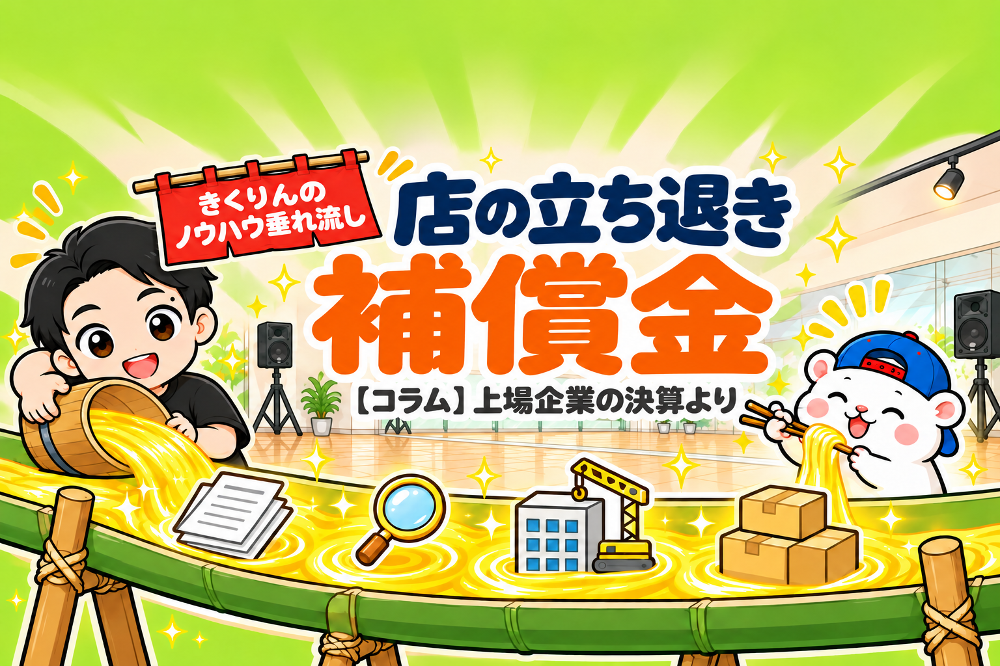

お店の立ち退きで、補償金が出ることがあります。
これは、個人の小さなお店だけの話ではありません。
上場しているチェーンの決算書にも、ちゃんと出てきます。
| 会社 | 決算に出た補償金 |
|---|---|
| 吉野家ホールディングス | 5年続けて、年に約1〜6億円 |
| ドトール・日レスホールディングス | 4年続けて、年に約2〜6億円 |
| 王将フードサービス | 約1.2億円 |
どれも、お店の退店や、借りている契約の終わりにともなう補償金です。
お店をたくさん借りていれば、どこかで建て替えや再開発に当たります。
立ち退きは、お店の商売では「そういうこともある」できごとです。
ただし、補償金を狙ってお店を出すのは、おすすめしません。
理由は、あとで書きます。
この記事では、次の3つを書きます。
- 決算書には、どんな名前で出てくるか
- 1店あたり、いくらくらいの例があるか
- もし立ち退きを言われたら、確かめること
この記事を書いた人

この記事は、23店舗を出して、そのうち5店舗をビルの取り壊しで閉めたきくりんが書いています。
定期借家でしたが、話し合いの結果、5部屋の利益の1年分以上の補償金が出ました。
1. 決算書では「補償金」の名前で出てくる
出典: 王将フードサービス 2026年3月期 決算短信(特別利益の「受取立退料」)
決算書には、「立ち退き料」とはあまり書かれていません。
会社ごとに、こんな名前で出てきます。
| 名前 | 使っている会社の例 |
|---|---|
| 受取補償金 | 吉野家・ルノアールなど |
| 退店補償金収入 | ドトール・日レス |
| 受取立退料 | 王将フードサービス |
| 移転補償金 | 鳥貴族 |
多くの会社は「特別利益」に入れています。
特別利益は、いつもの売上とは別の、その年だけのもうけのことです。
ひとつ、注意があります。
決算書には、なぜ退店したのかまでは、ほとんど書かれていません。
家主の建て替えや再開発での立ち退きと、はっきり書いている例は一部です。
なので、この記事の数字は「退店にともなう補償金」として見てください。
2. 大きなチェーンほど、毎年のように出ている
出典: 吉野家ホールディングス 有価証券報告書(2026年2月期)の「受取補償金」の注記
駅の近くにたくさんお店を借りている会社ほど、毎年のように出ています。
| 会社 | 決算に出た補償金 |
|---|---|
| 吉野家ホールディングス | 毎年 約1〜6億円 |
| ドトール・日レスホールディングス | 毎年 約2〜6億円 |
| 王将フードサービス | 約1.2億円 |
| 鳥貴族ホールディングス | 約3千万円 |
吉野家は、決算書の中でこう説明しています。
借りているお店の契約を解除したときの、営業の補償金などです。
王将は、そのまま「立退料」という名前で出しています。
ただ、どの会社も、本業のもうけのほうがずっと大きいです。
補償金は、利益のほんの一部です。
3. 1店あたりでは、1億円前後の例も
出典: 関門海「和解による特別利益(受取補償金)計上のお知らせ」2023年3月28日
1店あたりの金額まで発表している会社は、多くありません。
分かる例は、このくらいです。
| お店 | 補償金 |
|---|---|
| ふぐ料理店A・再開発 | 約1.3億円 |
| ふぐ料理店B・建て替え | 約1億円 |
どちらも、同じふぐ料理の会社が、理由まで発表したものです。
ふぐ料理店Bは、建物の持ち主から、建て替えで退去を求められたものです。
お店は長く続けてきた場所で、すぐには応じられませんでした。
裁判になり、話し合いで決着しています。
1億円は、大きなお店の、大きな例です。
会社が1件ずつ発表するのは、金額が大きいときだけです。
ふつうのお店なら、もっと小さいと考えておくのが自然です。
また、理由まではっきり分かるのは、この2つくらいです。
4. 喫茶ルノアールは、立ち退きを「リスク」と書いている
出典: 銀座ルノアール 有価証券報告書(2026年3月期)の「事業等のリスク」
決算を14年分、くわしく見てみた会社があります。
喫茶ルノアールです。
14年のうち10年で、補償金が出ていました。
合わせて、約10億円です。
利益の半分くらいを、補償金がしめた年もあります。
数字だけ見ると、補償金が大きく見えます。
でも、会社自身の書き方は、ちがいます。
決算書のリスクの欄には、こう書いています。
家主の事情で契約が終わると、業績のいいお店でも閉めることがある。
前の中期の目標に届かなかった理由にも、立ち退きでの閉店が多かったことを挙げています。
会社から見ると、立ち退きは「もうけのチャンス」ではありません。
大事なお店を失うことです。
補償金は、その代わりにもらうものだと分かります。
5. ぼくの場合は、定期借家でも補償金が出た
ぼくも、立ち退きで補償金を受け取ったことがあります。
| 項目 | ぼくの場合 |
|---|---|
| お店 | ビル1棟・5部屋のダンススタジオ |
| 契約 | 3年の定期借家 |
| 出た理由 | ビルの取り壊し |
| 補償金 | 5部屋の利益の1年分以上 |
最初から、取り壊しが決まっていたビルでした。
「期限が来たら、明け渡してください」という約束で借りています。
そのぶん、家賃は安めでした。
5部屋とも、しっかり利益が出ました。
「取り壊しが、なくならないかな」と思うくらいの稼ぎ頭です。
定期借家なので、期限が来たら、補償金なしで出るのがふつうです。
ぼくも「期限どおりに出て、終わりだろうな」と思っていました。
ところが、話し合いを重ねた結果、補償金を受け取ることができました。
ただ、これは、たまたまうまくいった例です。
定期借家で必ず出る、という話ではありません。
出るかどうかは、契約や話し合いの流れで変わります。
それに、補償金をもらっても、次の月からの利益はなくなります。
浮かれるより先に、次の物件を探しはじめました。
6. 補償金を狙ってお店を出すのは、おすすめしない
補償金が出る話を聞くと、「狙えばいいのでは」と思うかもしれません。
でも、ぼくはおすすめしません。
理由は3つです。
- いつ来るか分からない。来ない年のほうが多いこともある
- 失うのは、利益が出ているお店。補償金は利益の先取り
- 金額は、契約と話し合いしだい。出ないことも多い
1つめ。
たくさんお店を持つルノアールでも、14年のうち4年は、補償金がゼロでした。
1店や2店なら、何年待っても来ないことのほうがふつうです。
2つめ。
補償金は、これから稼ぐはずだった利益を、先にもらうようなものです。
お店がなくなれば、次の月からの利益もなくなります。
3つめ。
定期借家なら、期間が終われば、補償金なしで終わるのがふつうです。
普通借家でも、すんなり決まるとはかぎりません。
裁判になった例も、さっき書いたとおりです。
お店の価値は、毎月の利益で決まります。
物件は「立ち退きがなくても、利益が出るか」で選んでください。
物件の選び方と、期間の中で回収できるかの計算は、教科書にまとめています。
記事の最後にリンクを書いておきます。
7. もし立ち退きを言われたら、確かめる3つ
狙うものではありません。
でも、お店を続けていれば、いつか言われることはあります。
そのときは、この3つを確かめてください。
- ひとりで決めずに、弁護士などの専門家に相談する
- 補償金の中身と税金の扱いを、税理士さんに確かめる
- 次の物件探しを、すぐに始める
補償金は、中身によって税金の扱いが変わります。
引っこしの費用の分、休むあいだの売上の分などで、ちがいます。
ぼくの場合は、税理士さんに確かめて、大部分が税金のかからない扱いになりました。
必ず、税理士さんに確かめてください。
そのときのくわしい話は、こちらに書いています。

定期借家の物件の見方は、こちらです。

まとめ
立ち退きの補償金は、大きなチェーンの決算にも、毎年のように出ています。
お店の商売では、「そういうこともある」できごとです。
大事なことは、この3つです。
- 決算書では「受取補償金」などの名前で出てくる
- 立ち退きで1店1億円前後の例もあるが、大きなお店の、大きな例
- 狙うものではない。言われたら、相談・税金・次の物件の3つ
物件は、立ち退きがなくても利益が出るかで選びましょう。
先にぜんぶの手順を知りたい人は、記事の最後の教科書からどうぞ。
▼レンタルスペースの始め方は、ぜんぶ1冊にまとめてあります
物件選び・収支の計算・開業・運営・拡大まで。累計23店舗の経験を、全9部と付録15点のWeb教材に書きました。
第0部は登録なしで全文読めます。
『レンタルスペース経営の教科書』


販売価格は3部売れるごとに2,000円ずつ値上がりします（上限あり）。内容・最新価格は販売ページをご確認ください。